가스산업기사 (2003-05-25 기출문제)
1과목: 연소공학
1. gas연료에 연소에 있어서 확산염을 사용할 경우 예혼합염을 사용하는 것에 비해 얻을 수 있는 잇점이 아닌 것은?
- 역화의 위험이 없다.
- 가스량의 조절범위가 크다.
- 가스의 고온 예열이 가능하다.
- 개방 대기중에서도 완전연소가 가능하다.
(정답률: 63%)

2. 다음은 가연물의 연소형태를 나타낸 것이다. 틀린 것은?
- 금속분-표면연소
- 파라핀-증발연소
- 목재-분해연소
- 유황-확산연소
(정답률: 77%)
3. 다음 물질중 가연성가스로만 묶어진 항은 어느것인가?
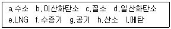
- a.c.d.g
- a,d,e,i
- b,e,f,i
- b,d,e,h
(정답률: 96%)
4. 다음 폭발 종류 중 그 분류가 화학적 폭발로 분류 할 수 있는 것은?
- 증기폭발
- 분해폭발
- 압력폭발
- 기계적폭발
(정답률: 76%)
5. 기체 연료 중 수소가 산소와 화합하여 물이 생성되는 경우에 있어 H2 : O2 : H2O 의 비례 관계는?
- 2 : 1 : 2
- 1 : 1 : 2
- 1 : 2 : 1
- 2 : 2 : 3
(정답률: 89%)
6. 그림은 반데르바알스식에 의한 실제가스의 등온곡선을 나타낸 것이다. 그림 중 임계점은 어느 것인가?
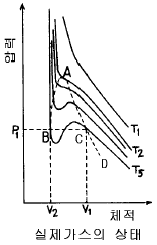
- A
- B
- C
- D
(정답률: 71%)
7. 25℃에서 N2, O2, CO2의 분압이 각각 0.71atm, 0.15atm, 0.14atm이며, 이상적으로 행동할 때 이 혼합기체의 평균 분자량은 얼마인가? (단, 전압은 1atm이다.)
- 29.84
- 30.00
- 30.84
- 31.24
(정답률: 62%)
8. 다음은 기체연료 중 천연가스에 관한 설명이다. 옳은 것은?
- 주성분은 메탄가스로 탄화수소의 혼합가스이다.
- 상온,상압에서 LPG보다 액화하기 쉽다.
- 발열량이 수성가스에 비하여 작다.
- 누출시 폭발위험성이 적다.
(정답률: 88%)
9. 다음은 화염사출율에 관한 설명이다. 옳은 것은?
- 화염의 사출율은 연료 중의 탄소,수소,질량비가 클수록 높다.
- 화염의 사출율은 연료 중의 탄소,수소,질량비가 클수록 낮다.
- 화염의 사출율은 연료 중의 탄소,수소,질량비가 같을 수록 높다.
- 화염의 사출율은 연료 중의 탄소,수소,질량비가 같을 수록 낮다.
(정답률: 73%)
10. 다음 총발열량 및 진발열량에 관한 설명을 올바르게 표현한 것은?
- 총발열량은 진발열량에 생성된 물의 증발잠열을 합한 것과 같다.
- 진발열량이란 액체 상태의 연료가 연소할 때 생성되는 열량을 말한다.
- 총발열량과 진발열량이란 용어는 고체와 액체 연료에서만 사용되는 말이다.
- 총발열량이란 연료가 연소할 때 생성되는 생성물중 H2O의 상태가 기체일 때 내는 열량을 말한다.
(정답률: 68%)
11. 가연성 증기속에 수분이 많이 포함 되어 있을때 일어나는 현상이 아닌 것은?
- 수격작용 유발 가능성이 높다.
- 증기 엔탈피가 감소한다.
- 열효율 저하된다.
- 건조가 높아진다.
(정답률: 87%)
12. 1 ata, 4L 기체 A와 2 ata, 5L의 기체 B를 1L 용기속에 충전시킬 때 전압(ata)은 얼마인가? (단, A와 B는 반응하지 않고 온도는 일정하다.)
- 14
- 9
- 3
- 1
(정답률: 62%)
13. 가스의 기본특성에 관한 설명 중 옳은 것은?
- 염소는 공기보다 무거우며 무색이다.
- 질소는 스스로 연소하지 않는 조연성이다.
- 산화에틸렌은 기체상태에서 분해폭발성이 있다.
- 일산화탄소는 수분혼합으로 중합폭발을 일으킨다.
(정답률: 82%)
14. 다음 중 폭발 위험도를 설명한 것으로 옳은 것은?
- 폭발상한계를 하한계로 나눈 값
- 폭발하한계를 상한계로 나눈 값
- 폭발범위를 하한계로 나눈 값
- 폭발범위를 상한계로 나눈 값
(정답률: 75%)
15. 다음 중 폭발범위의 설명으로 옳은 것은?
- 점화원에 의해 폭발을 일으킬 수 있는 혼합가스 중의 가연성 가스의 부피 %
- 점화원에 의해 폭발을 일으킬 수 있는 혼합가스 중의 가연성 가스의 중량 %
- 점화원에 의해 폭발을 일으킬 수 있는 혼합가스 중의 지연성 가스의 부피 %
- 점화원에 의해 폭발을 일으킬 수 있는 혼합가스 중의 지연성 가스의 중량 %
(정답률: 80%)
16. 기체혼합물의 각 성분을 표현하는 방법으로 여러가지가 있다. 다음은 혼합가스의 성분비를 표현하는 방법이다. 다른 값을 갖는 것은?
- 몰분율
- 질량분율
- 압력분율
- 부피분율
(정답률: 59%)
17. 다음은 연소범위에 관한 설명이다. 잘못 된 것은?
- 수소(H2) gas의 연소범위는 4∼75% 이다.
- 가스의 온도가 높아지면 연소범위는 좁아진다.
- C2H2는 자체분해폭발이 가능하므로 연소상한계를 100%로 볼 수 있다.
- 연소범위는 가연성기체의 공기와의 혼합율에 있어서 점화원에 의해 필연적으로 연소가 일어날 수 있는 범위를 말한다.
(정답률: 86%)
18. 1 ton의 CH4이 연소하는 경우 필요한 이론공기량은?
- 13333m3
- 23333m3
- 33333m3
- 43333m3
(정답률: 64%)
19. 화학 반응속도를 지배하는 요인에 대한 설명이다. 맞는 것은?
- 압력이 증가하면 항상 반응속도가 증가한다.
- 생성 물질의 농도가 커지면 반응속도가 증가한다.
- 자신은 변하지 않고 다른 물질의 화학변화를 촉진하는 물질을 부촉매라고 한다.
- 온도가 높을수록 반응속도가 증가한다.
(정답률: 74%)
20. 메탄을 공기비 1.1로 완전연소시키고자 할 때 메탄 1m3N당 공급해야할 공기량은 약 몇m3N인가?
- 2.2
- 6.3
- 8.4
- 10.5
(정답률: 66%)
2과목: 가스설비
21. 펌프에서 발생되는 수격현상의 방지법으로 옳지 않은 것은?
- 유속을 낮게 한다.
- 압력조절용 탱크를 설치한다.
- 밸브를 펌프토출구 가까이 설치한다.
- 밸브의 개폐는 신속히 한다.
(정답률: 71%)
22. 가스 비등점이 낮은 것부터 바르게 나열한 것은?
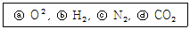
- ⓑ-ⓒ-ⓐ-ⓓ
- ⓑ-ⓓ-ⓐ-ⓒ
- ⓒ-ⓐ-ⓓ-ⓑ
- ⓒ-ⓓ-ⓐ-ⓑ
(정답률: 54%)
23. 금속의 성질을 개선하기 위한 열처리에 대한 설명으로 옳지 않은 것은?
- 소둔(풀림)을 하면 인장강도가 저하한다.
- 소입(담금질)을 하면 신율이 감소한다.
- 소려(뜨임)은 취성을 작게하는 조작이다.
- 탄소강을 냉간가공하면 단면수축율은 증가하고 가공 경화를 일으킨다.
(정답률: 65%)
24. 배관의 스케쥴 번호를 정하기 위한 식은? (단, P 는 사용압력(kg/cm2), S 는 허용응력(kg/mm2))
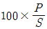
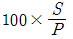
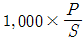
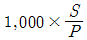
(정답률: 49%)
25. 암모니아 합성가스 및 수소제조 설비에 고온변성 촉매로 사용되는 것은?
- 산화철 – 산화크롬계촉매
- 산화아연 – 산화크롬계촉매
- 산화철 – 산화아연계촉매
- 산화아연 - 일산화구리계촉매
(정답률: 47%)
26. 프로판(C3H8) 11g을 태워서 나오는 이산화탄소는 표준 상태에서 얼마(L) 인가?
- 39.2 L
- 22.4 L
- 16.8 L
- 5.6 L
(정답률: 49%)
27. 도시가스 제조 공정 중 가열방식에 의한 분류로 원료에 소량의 공기와 산소를 혼합하여 가스발생의 반응기에 넣어 원료의 일부를 연소시켜 그 열을 열원으로 이용하는 방식은?
- 자열식
- 부분연소식
- 축열식
- 외열식
(정답률: 81%)
28. 이산화탄소 소화설비의 가스압력식 기동장치의 설비 기준 중 기동용 가스용기에 사용하는 밸브의 압력은 얼마 이상이어야 하는가?
- 100 Kg/cm2
- 200 Kg/cm2
- 250 Kg/cm2
- 300 Kg/cm2
(정답률: 40%)
29. 구리 및 구리합금으로 되어있는 장치를 사용할 수 있는 물질은?
- 알곤
- 황화수소
- 아세틸렌
- 암모니아
(정답률: 78%)
30. LP 가스의 충전 방법으로 적합치 않은 것은?
- 진공펌프에 의한 방법
- 차압에 의한 방법
- 액체펌프에 의한 방법
- 압축기에 의한 방법
(정답률: 48%)
31. 15℃ 볼탱크에 저장된 액화프로판(C3H8)을 시간당 50Kg씩 15℃의 기체로 공급하려고 증발기에 전열기를 설치했을때 필요한 전열기의 용량은? (단, 프로판 증발열 3740 cal/gmol 15℃, 1 cal = 1.163 × 10-6 KWH)
- 4.94 KW
- 0.217 KW
- 2.17 KW
- 0.494 KW
(정답률: 46%)
32. 펌프의 송출유량이 Q[m3/s], 양정이 H[m], 취급하는 액체의 비중량이 r[kg/m3] 일 때 펌프의 수동력 Lw[kW]을 구하는 식은?
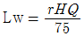
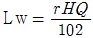
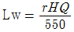
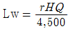
(정답률: 74%)
33. 도시가스의 원료 중 제진, 탈유, 탈탄산, 탈습 등의 전처리를 필요로 하는 것은?
- 천연가스
- LNG
- LPG
- 나프타
(정답률: 44%)
34. 다기능 가스 안전계량기는 통상 사용 상태에서 출구측의 압력을 감지하여, 압력이 얼마가 되면 가스가 차단하도록 되어 있는가?
- 200 mmH2O
- 130 mmH2O
- 100 mmH2O
- 60 mmH2O
(정답률: 33%)
35. 염소가스 공급 설비에서 용량 결정은 가열기의 전열 면적 1[m2]당 염소 가스의 기화능력(㎏/hr)이 얼마일 때 인가?
- 20 - 40 kg/h
- 30 - 40 kg/h
- 50 - 80 kg/h
- 60 - 170 kg/h
(정답률: 54%)
36. 냉동기의 냉매로서 가장 부적당한 물질은?
- 펜탄가스
- 암모니아가스
- 프로판가스
- 부탄가스
(정답률: 49%)
37. 프로판(C3H8)과 부탄(C4H10)의 몰비가 2:1인 혼합가스가 3atm(절대압력), 25℃로 유지되는 용기속에 존재할 때 이 혼합 기체의 밀도는? (단, 이상 기체로 가정)
- 6.548 g/ℓ
- 7.121 g/ℓ
- 5.402 g/ℓ
- 5.975 g/ℓ
(정답률: 42%)
38. 고압가스 용기에 사용되는 강의 성분원소 작용에 대한 설명으로 옳은 것은?
- 탄소량이 증가할수록 인장강도는 증가한다.
- 인(P)는 적열취성의 원인이 된다.
- 황(S)는 상온취성의 원인이 된다.
- 망간(Mn)은 적열취성의 원인이 된다.
(정답률: 63%)
39. 용접부내 결함 검사에 가장 적합한 방법으로 검사결과의 기록이 가능하나 검사비용이 비싼 검사방법은?
- 자분검사
- 침투검사
- 방사선투과검사
- 음향검사
(정답률: 87%)
40. 염소가스 압축기의 실린더에 사용되는 윤활제는?
- 진한황산
- 양질의 광유
- 식물성유
- 묽은 글리세린
(정답률: 79%)
3과목: 가스안전관리
41. 역류방지밸브의 설치 장소로 옳지 않은 것은?
- C2H2 고압건조기와 충전용 교체밸브 사이
- 가연성 가스압축기와 충전용 주관 사이
- C2H2을 압축하는 압축기의 유분리기와 고압건조기 사이
- NH3, CH3OH 합성탑 또는 정제탑과 압축기 사이
(정답률: 48%)
42. 초저온 용기의 정의로 옳은 것은?
- 임계온도가 -30℃ 이하인 액화가스를 충전하기 위한 용기.
- 임계온도가 -50℃ 이하인 액화가스를 충전하기 위한 용기.
- 임계온도가 -70℃ 이하인 액화가스를 충전하기 위한 용기.
- 임계온도가 -90℃ 이하인 액화가스를 충전하기 위한 용기.
(정답률: 75%)
43. 정전기로 인한 화재· 폭발 사고를 예방하기 위해 취해야 할 조치가 아닌 것은?
- 유체의 분출 방지
- 절연체의 도전성 감소
- 공기의 이온화 장치 설치
- 유체를 이· 충전시 유속의 제한
(정답률: 80%)
44. 20kg의 LPG가 누출하여 폭발할 경우 TNT 폭발 위력으로 환산하면 TNT몇 kg에 해당하는가? (단, 가스의 발열량: 12,000 kcal/㎏ TNT의 연소열:1,100 kcal/㎏ 폭발효율: 3%이다.)
- 0.6kg
- 6.5kg
- 16.2kg
- 26.6kg
(정답률: 65%)
45. 고압가스제조허가의 종류가 아닌 것은?
- 고압가스특정제조
- 고압가스일반제조
- 고압가스충전
- 특정고압가스제조
(정답률: 57%)
46. 아세틸렌을 용기에 충전하는 때에는 미리 용기에 다공질물을 고루 채워 다공도가 75％이상 92％미만이 되도록 한 후 ( ) 또는 디메틸포름아미드를 고루 침윤시키고 충전해야 한다. ( )안에 적당한 물질은?
- 질소
- 에틸렌
- 아세톤
- 암모니아
(정답률: 79%)
47. 독성가스 충전시설에는 다른 제조시설과 구분하여 외부로 부터 충전 시설임을 쉽게 식별할 수 있는 설치 조치는?
- 충전표지
- 경계표지
- 위험표지
- 안전표지
(정답률: 80%)
48. 산소를 운반하는 챠량에 고정된 탱크의 내용적은 얼마를 초과할 수 없는가? (단, 철도차량 또는 견인차에 고정된 탱크는 제외)
- 18,000L
- 21,000L
- 33,000L
- 42,000L
(정답률: 84%)
49. 공기 중 폭발범위가 가장 큰 것은?
- 수소
- 암모니아
- 일산화탄소
- 아세틸렌
(정답률: 81%)
50. 각종 용기의 검사방법에 대한 설명으로 옳은 것은?
- 아세틸렌 용기의 내압시험압력은 최고충전압력의 1.5배이다.
- 수조식 내압시험의 항구증가율이 10% 이하이어야 합격한 것이다.
- 초저온 및 저온 용기의 기밀시험 압력은 최고충전압력의 1.8배이다.
- 고압가스설비의 내압시험압력은 최고충전압력의 1.1배이다.
(정답률: 58%)
51. 고압가스 및 유독 물질을 처리하는 공정 등에 적용하는 정량적 위험성 평가 기법으로 가장 적절한 것은?
- FTA(Fault Tree Analysis)
- PHA(Preliminary Hazard Analysis)
- FMEA(Failure Mode Effect Analysis)
- FMECA(Failure Mode Effect Criticality Analysis)
(정답률: 69%)
52. 도시가스배관을 도로매설 시 배관의 외면으로부터 도로경계까지 얼마 이상의 수평거리를 유지하여야 하는가?
- 1.5m
- 0.8m
- 1.0m
- 1.2m
(정답률: 60%)
53. 독성가스와 그 제독 처리제를 짝지은 것 중 옳지 않은 것은?
- NH3 - 다량의 물
- Cl2 - 다량의 물, 염화 제2철
- H2Se - 금속산화물, 염화 제2철, 알칼리 수용액
- H2S - 금속산화물, 염화 제2철
(정답률: 68%)
54. 도시가스의 제조 방식 중 가열방식에 의한 분류가 아닌 것은?
- Cyclic식
- 자열식
- 외열식
- 부분연소식
(정답률: 58%)
55. 내용적 50ℓ 의 용기에 프로판을 충전할 때 최대 충전량은? (단, 프로판 충전정수는 2.35 이다.)
- 21.3 ㎏
- 47 ㎏
- 117.5 ㎏
- 11.8 ㎏
(정답률: 67%)
56. 아황산 가스에 대한 설명으로 옳지 않은 것은?
- 강한 자극성이 있는 무색의 기체이다.
- 공기중의 그 농도가 0.5-1ppm일 때 감각적으로 그 소재를 알 수 있다.
- 30-40ppm일때 호흡이 곤란하게 된다.
- 300-400ppm일때 생명이 위험하다.
(정답률: 55%)
57. 가연성 가스의 내부가스를 치환하여 수리할 때 가스농도는 폭발하한계의 얼마 이하까지 치환시키는가?
- 1/2 이하
- 2/4 이하
- 1/3 이하
- 1/4 이하
(정답률: 79%)
58. 차량에 고정된 탱크를 운행할 경우에 휴대하여야 할 안전운행 서류철에 포함사항이 아닌 것은?
- 탱크 테이블
- 안전성향상계획서
- 차량등록증
- 고압가스 이동계획서
(정답률: 75%)
59. 아세틸렌의 품질 검사에서 순도 기준으로 맞는 것은? (단, 발연황산 시약을 사용한 오르잣드법)
- 99.5 % 이상
- 99 % 이상
- 98 % 이상
- 98.5 % 이상
(정답률: 80%)
60. 제1종 보호시설로서 가연성 가스의 저장능력이 20,000m3일 때 안전거리는?
- 21m
- 24m
- 27m
- 17m
(정답률: 64%)
4과목: 가스계측
61. 가스미터의 종류 중 추량식 가스미터가 아닌 것은?
- 로터리피스톤식미터
- 오리피스미터
- 터빈식미터
- 벤츄리식미터
(정답률: 64%)
62. 열전대 온도계의 종류로서 옳지 않은 것은?
- 구리-콘스탄탄
- 백금-백금로듐
- 크로멜-콘스탄탄
- 크로멜-알루멜
(정답률: 77%)
63. 가스크로마토그래피의 운반가스로서 적당하지 않은 것은?
- 질소
- 염소
- 수소
- 알곤
(정답률: 57%)
64. 다음 설명에 적당한 제어동작은?
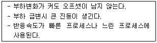
- I 동작
- D 동작
- PI 동작
- PD 동작
(정답률: 48%)
65. 실측식가스미터의 기능에 대한 설명으로 옳지 않은 것은?
- 대량수요시 루트식이 적합하다.
- 막식 미터는 소용량(100m3/hr)에 적당하다.
- 습식가스미터는 가스발열량도 측정이 가능하다.
- 습식가스미터는 사용 중 기압차 변동이 많다.
(정답률: 50%)
66. 수은을 이용한 U자관식 액면계에서 그림과 같이 높이가 70cm일 때 P2는 절대압으로 얼마인가?
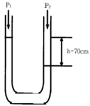
- 1.92kg/cm2
- 1.92 atm
- 1.87 bar
- 20.24mH2O
(정답률: 66%)
67. 가스미터의 검정공차는 최대 유량이 4/5 이상일 때 얼마인가?
- ± 1.5%
- ± 2.5%
- ± 3.5%
- ± 4.5%
(정답률: 56%)
68. 가연성 가스검출기의 종류로서 옳지 않은 것은?
- 리트머스지형
- 안전등형
- 간섭계형
- 열선형
(정답률: 57%)
69. 가스크로마토그래피 컬럼재료로 사용되는 흡착제가 아닌 것은?
- 실리카겔
- 뮬레큘레시브(Molecular Sieve)
- 고상 가성소다
- 활성알루미나
(정답률: 44%)
70. 가스크로마토그래피법에서 고정상 액체의 구비조건으로 옳지 않은 것은?
- 분석대상 성분의 분리능이 높아야 한다.
- 사용온도에서 증기압이 높아야 한다.
- 화학적으로 안정된 것이어야 한다.
- 점성이 작아야 한다.
(정답률: 51%)
71. 2 개의 회전자로 구성되고, 소형으로 대용량의 가스측정이 가능한 가스미터는?
- 막식미터
- 루츠미터
- 터빈식미터
- 와류식미터
(정답률: 70%)
72. 차압식 유량계에서 조리개 전후의 압력차가 처음보다 두배만큼 커졌다면 유량은 어떻게 변하는가?
- Q2 = Q1
- Q2 = 2Q1
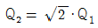
- Q2 = 4Q1
(정답률: 69%)
73. 정확한 계량이 가능하여 기준기로 이용되며, 드럼의 회전수로 유량을 산출하는 가스미터는?
- 건식가스미터
- 루트미터
- 막식가스미터
- 습식가스미터
(정답률: 67%)
74. 광학적 방법인 슈리렌법(schlieren method)은 무엇을 측정하는가?
- 기체의 흐름에 대한 속도변화
- 기체의 흐름에 대한 온도변화
- 기체의 흐름에 대한 압력변화
- 기체의 흐름에 대한 밀도변화
(정답률: 72%)
75. 염화제1구리 착염지는 어떤 가스를 검지할 때 사용하는 시험지인가?
- 일산화탄소
- 포스겐
- 황화수소
- 아세틸렌
(정답률: 63%)
76. 액주식압력계에 사용되는 액주의 구비조건으로 거리가 먼 것은?
- 점도가 낮을 것
- 혼합 성분일 것
- 밀도변화가 적을 것
- 모세관 현상이 적을 것
(정답률: 64%)
77. 증기 비중이 제일 적은 기체는?
- NH3
- O2
- C3H8
- HCN
(정답률: 68%)
78. 기준 입력과 주피드백량의 차로서 제어동작을 일으키는 신호는?
- 기준입력 신호
- 조작 신호
- 동작 신호
- 주피드백 신호
(정답률: 56%)
79. 바이메탈온도계의 특징으로 옳지 않은 것은?
- 히스테리시스 오차가 발생한다.
- 온도변화에 대한 응답이 빠르다.
- 온도조절 스위치로 많이 사용한다
- 작용하는 힘이 작다.
(정답률: 67%)
80. 계통적 오차(systematic error)에 해당되지 않는 것은?
- 계기오차
- 환경오차
- 이론오차
- 우연오차
(정답률: 75%)